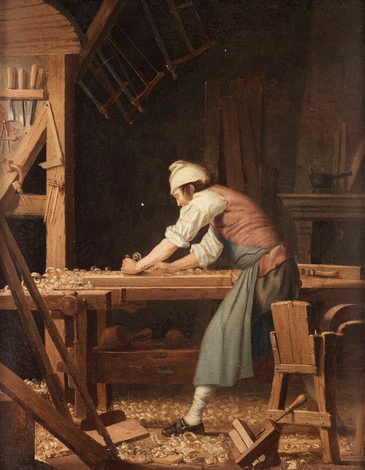

من محمد علی خرمی فر هستم.
امسال در 1403 وارد دانشکده شرق گیلان شدم.
اشنایی با برنامه نویسی و دنیای کامپیوتر برام سخت بود. سخت تر از چیزی که انتظارشو داشتم حقیقا.ولی کامپیوتر علاقه اول من نبود.علاقه اول هدف اصلی من دریا نوردی بود.
بخاطر یکهویی اتفاق افتادن همه چیز بدون حساب کتاب وارد جریانی شدم که نمیدونستم چیه..خیلی دوست داشتم بتونم با دانش قبلی درباره کامپیوتر و شماخت کلی درباره ان وارد این حوضه بشم اما الانم راضیم چون احساس میکنم میتونم با این رشته ارتباط بگیرم و اون طوری که باید دران موفق بشوم

درباره نجاری شغل مورد علاقه من از ابتدا:
از اول کامپیوتر و دیگر شغل های اداری اصلا مد نظر من نبود من از اول با نجاری اوکی بودم.
من از بچگی جنگل و چوب رو دوست داشتم تا بلاخره دلو زدم به دریا و رفتم توی یک کارگاه بزرگ توی شهرمون مشغل به کار شدم.
از اون موقع 4 و 5 سال میگذره.توی پروژه های مختلف رو چیز های مختلف کار کردم.از کمد و کابینت تا شلف و چراغ خواب و چیزای هنری.هیچ چیزی بهتر از اون بوی چوب حین کار کردن باهاش نیست.وقتی بعد اتمام کار با افتخار به کار خودت نگاه میکنی و تو دلت میگی:به به چه چیزی ساختم.
به هر چیزی اگه با عشق نگاه کنی اون کار برات معنا دار میشه.من احساس میکنم میخوام توی یه کلبه جدا دور از شعر یه مزرعه داشته باشم.کارای نجاری و برش چوب و .. رو اونجا انجام بدم و به اسب سواری بپردازم.
خانهاولین کاری که خودم تنهایی درست کردم:
اولین چیزی که خودم درست کردم یه چراغ خواب بود که به یک نفر کادو دادمش توی اینستاگرام دیدم چطور ساخته میشه.خواستم مثل همون بسازم ولی وقتی شروع به کار کردن کردم فهمیمیدم هنوز اون قدر مهارت ندارم که اونو بسازم.پس هی اسون ترش کردم.ولی الان تو خودم میبینم میتونم خیلی بهترشو درست کنم.
از اون موقع به این ور خیلی چیزای بیشتری درست کردم.مثل برنامه نویسی میمونه اولین
hello word
همیشه یادت میمونه که با کدوم زبان بود و چطور نوشتی.بقیش هم الکین..jpg)
.jpg)
خانه